Why mobile devices need to connect
Nearly everyone now carries a smartphone, a tablet, or both — and every one of those devices needs a way back to the computers and networks an organization already runs. The catch is that connection methods aren't standardized: different devices, different eras, and different manufacturers each favor their own wired or wireless approach.
These connections aren't only for charging. The same link is commonly reused for data synchronization, backing up what's on the device, and confirming the device's identity.
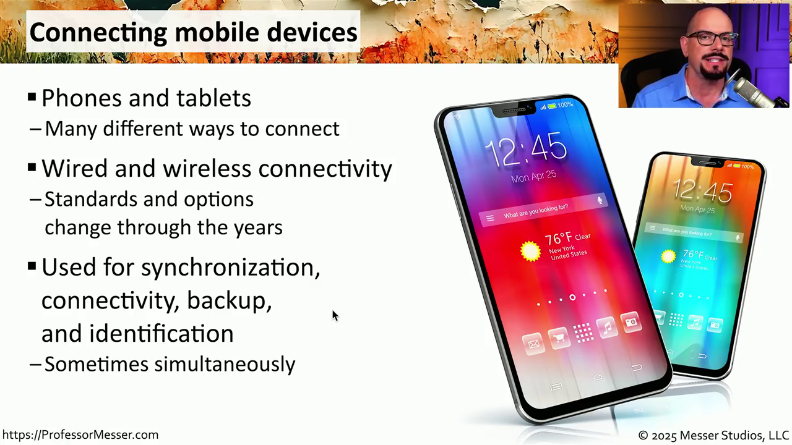
නූතන ලෝකයේ සෑම පුද්ගලයෙකුම සහ ආයතනයක සිටින සෑම සාමාජිකයෙකුම පාහේ ස්මාර්ට් ජංගම දුරකථනයක් (Smartphone), ටැබ්ලට් පරිගණකයක් (Tablet) හෝ මේ දෙකම භාවිත කරයි. මෙම ජංගම උපාංග පරිගණක සහ ආයතනික ජාල (Networks) සමග සම්බන්ධ කිරීම අත්යවශ්ය වේ.
සබඳතාවල ප්රධාන අරමුණු: බැටරි ආරෝපණය, දත්ත සමමුහුර්තකරණය, දත්ත උපස්ථ කිරීම, සහ උපාංග අනන්යතාව තහවුරු කිරීම.
USB standards
USB — Universal Serial Bus — is the most common way mobile devices have connected for years, even though the physical connector on the device end has changed over time.
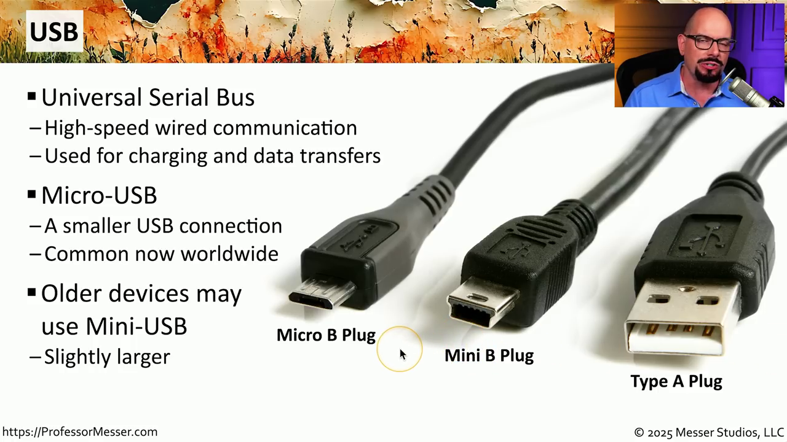
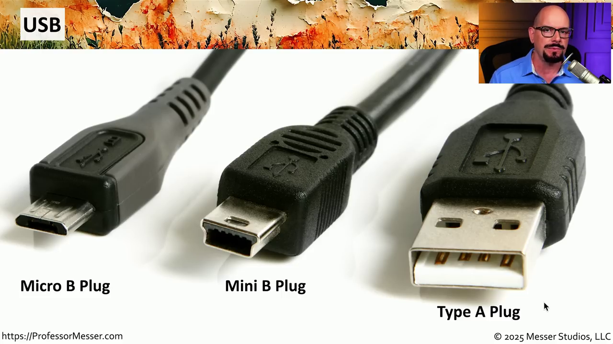
ජංගම උපාංග සම්බන්ධ කිරීම සඳහා බහුලවම භාවිත වන සම්මත ක්රමය වන්නේ USB (Universal Serial Bus) තාක්ෂණයයි.
මිනි USB සහ මයික්රෝ USB: පැරණි ජංගම දුරකථන සහ උපාංග වල බහුලව භාවිත වූ අතර, තවමත් සමහර උපාංග වල දැකගත හැක. USB Type-A: ඩෙස්ක්ටොප් හෝ ලැප්ටොප් පරිගණක වලට සම්බන්ධ කිරීම සඳහා අනෙක් කෙළවරේ බහුලව භාවිත වන සම්මත විශාල ප්රමාණයේ USB පෝට් වර්ගයයි.
USB Type-C
Modern devices still use USB, but through a newer physical connector: USB-C. It replaces the old Type-A/Micro-B shape while staying backward-compatible with USB signaling underneath.
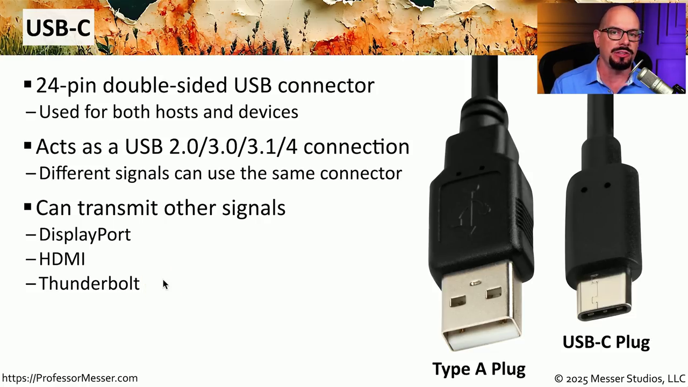
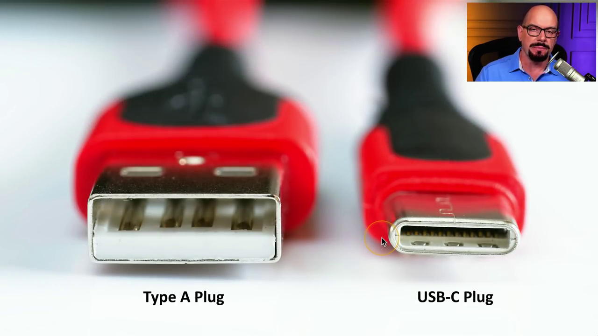
දෙපැත්තම භාවිත කළ හැකි සැලසුම: පින් 24 කින් සමන්විත වන අතර, ඕනෑම පැත්තක් හරවා පහසුවෙන් සම්බන්ධ කළ හැක. විවිධ සංඥා සම්ප්රේෂණය: දත්ත සහ විදුලි බලය ලබාදීමට අමතරව DisplayPort, HDMI, සහ Thunderbolt වැනි විවිධ සංඥා තනි කේබලයක් හරහා සම්ප්රේෂණය කළ හැක. ඉහළ වේගය: පැරණි USB 2.0/3.0 වලට වඩා ඉහළ දත්ත හුවමාරු වේගයක් සහ වේගවත් ආරෝපණ ධාරිතාවක් සපයයි.
Apple Lightning
Older Apple mobile devices skip USB entirely at the device end, using Apple's own proprietary connector instead.
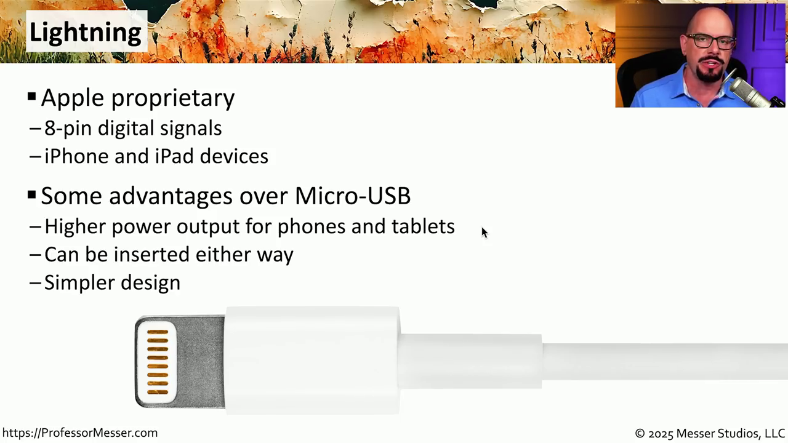
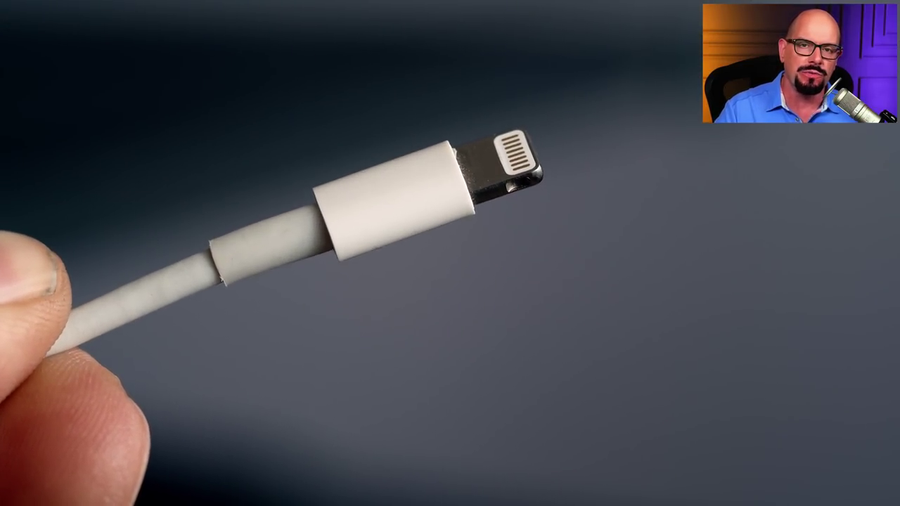
ඇපල් (Apple) සමාගම විසින් ඔවුන්ගේ පැරණි iPhone සහ iPad උපාංග සඳහා හඳුන්වා දුන් හිමිකාරීත්ව (Proprietary) සම්බන්ධකයකි. පින් 8 ක සැකැස්ම: දෙපැත්තම හරවා සම්බන්ධ කළ හැකි සරල සැලසුමකි. වාසි: පැරණි මයික්රෝ-USB වලට වඩා ඉහළ විදුලි බලයක් සැපයීමට සහ වේගයෙන් බැටරි ආරෝපණය කිරීමට හැකි විය. නූතන ප්රවණතාව: වර්තමානයේ බොහෝ ආයතන සහ උපාංග තනි ප්රමිතියක් ලෙස USB-C වෙත සංක්රමණය වෙමින් පවතී.
The connector line-up, side by side
A quick visual comparison of the four connector tips discussed above, plus the phones they plug into — a reminder of why a tech's bag often ends up carrying several cable types at once.
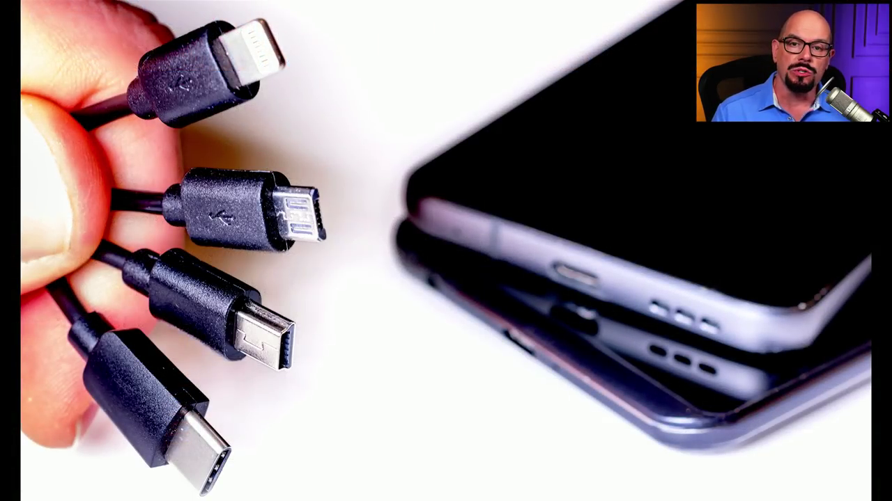
NFC — Near Field Communication
The first wireless option: a very short-range link built into most phones, tablets, and smartwatches for exchanging a small amount of data.
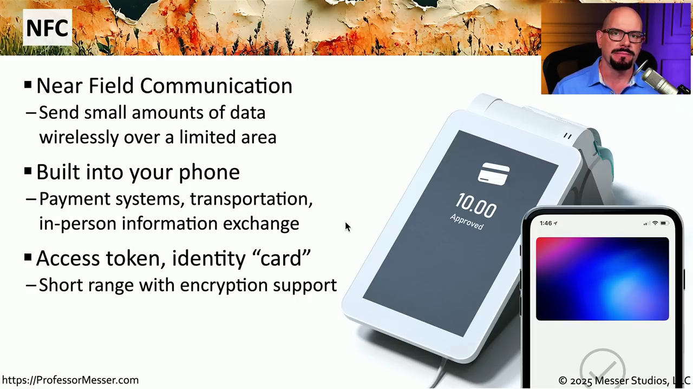
සෙන්ටිමීටර 4 ක් හෝ ඊට අඩු ඉතා කෙටි දුරක් තුළ සුළු දත්ත ප්රමාණයක් රැහැන් රහිතව හුවමාරු කර ගැනීමට භාවිත වේ.
ප්රධාන යෙදුම්: ගෙවීම් පර්යන්ත (POS) වලදී ස්මාර්ට්ෆෝන් හෝ ස්මාර්ට් ඔරලෝසු මගින් මුදල් ගෙවීම; දොරවල් විවෘත කිරීම සහ ගොඩනැගිලි වලට ඇතුළු වීම සඳහා ප්රවේශ පාලනයක් ලෙස ක්රියා කිරීම; දුරකථන දෙකක් අතර දත්ත හුවමාරුව.
Bluetooth
Bluetooth trades NFC's tiny range for much higher throughput over a still-short distance — the backbone of a person's own Personal Area Network (PAN).
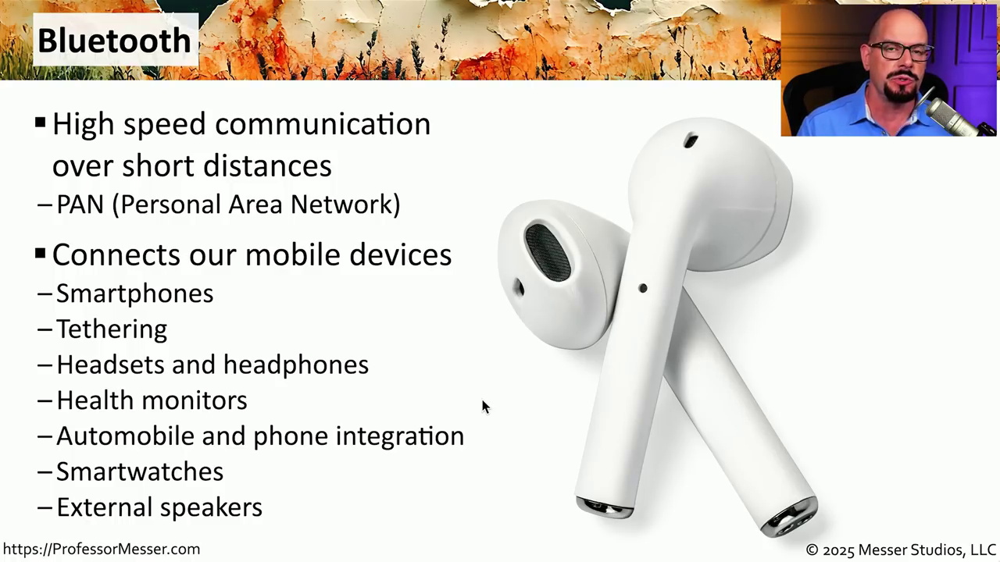
කෙටි දුරක් තුළ අධිවේගී රැහැන් රහිත සබඳතා ඇති කර ගැනීම සඳහා භාවිත වේ. පුද්ගලික ප්රදේශ ජාල (PAN): පුද්ගලයෙකු තමන් සතු උපාංග සම්බන්ධ කර ගැනීමට මෙය ප්රධාන වශයෙන් භාවිත කරයි.
පර්යන්ත උපාංග: රැහැන් රහිත හෙඩ්ෆෝන්, හෙඩ්සෙට්, යතුරුපුවරු, සහ මවුස් සම්බන්ධ කිරීමට බහුලව භාවිත වේ.
Hotspot & tethering
Both features turn a phone's cellular data into internet access for other devices — the difference is how many devices are allowed to use it at once.
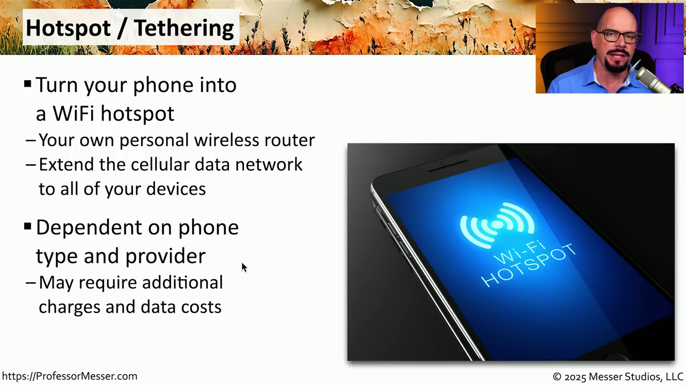
මොබයිල් හොට්ස්පොට්: ජංගම දුරකථනය රැහැන් රහිත රවුටරයක් ලෙස ක්රියා කරමින්, එකවර පරිශීලකයින් සහ උපාංග කිහිපයකට Wi-Fi හරහා අන්තර්ජාලයට සම්බන්ධ වීමට ඉඩ සලසයි.
ටෙදරින්ග්: ජංගම දුරකථනය තනි උපාංගයකට පමණක් USB කේබලයක්, බ්ලූටූත් හෝ Wi-Fi හරහා සම්බන්ධ කර අන්තර්ජාලය ලබාදීමේ ක්රමයයි. සැලකිය යුතු කරුණ: මෙම පහසුකම් භාවිතය ඔබගේ සේවා සැපයුම්කරු සහ සක්රීය දත්ත සැලැස්ම මත රඳා පවතී.
What to Remember for the Exam
The exact facts CompTIA loves to test on this objective — memorize these cold.
- USB-C = 24-pin, reversible, can carry DisplayPort/HDMI/Thunderbolt signals in addition to USB data.
- Lightning = Apple proprietary, 8-pin, reversible — not a USB connector.
- Micro-USB is smaller and more common than Mini-USB — know them apart on sight.
- NFC range is roughly 4 cm or less — the shortest-range wireless tech in this objective.
- Bluetooth = short-range, high-speed, builds a PAN (Personal Area Network).
- Hotspot = many devices at once (phone acts as a router). Tethering = one device only.
- Tethering can happen over USB, Bluetooth, or Wi-Fi — it isn't limited to a cable.
- Hotspot/tethering availability depends on the carrier's data plan, not just the phone's hardware.
- All of these connections can serve more than one purpose at once: charging, sync, backup, identification.
SOC Analyst — Real-World Relevance
As a SOC Analyst, this objective isn't trivia — it maps directly to alerts and policy violations you'll actually see in a ticket queue.
An employee's phone acting as a hotspot — or a rogue Wi-Fi access point disguised as one — can let a device bypass the corporate firewall and proxy entirely. Watch for unmanaged SSIDs and unexpected wireless clients appearing on wired segments (a classic sign of hotspot bridging).
A user tethering a managed laptop to a personal phone (via USB, Bluetooth, or Wi-Fi) can move data outside the org's monitored network path. DLP and endpoint logs should flag new "cellular" or personal-hotspot network adapters appearing on a managed device.
Because USB is the universal charging/data path, it's also the universal drop point for malicious devices (rogue USB drives, BadUSB-style keystroke injectors). USB device-control policies and endpoint alerts on unrecognized USB device IDs are a direct extension of this topic.
Unauthorized NFC payment/access-badge cloning and unexpected Bluetooth pairing requests (bluejacking/bluesnarfing-style behavior) are proximity-based threats worth knowing when triaging a "someone tried to pair with my device" report.
Cloud Security Engineer — Real-World Relevance
On the cloud side, this objective underpins how you reason about device trust and conditional access for mobile users reaching cloud consoles and SaaS apps.
Cloud identity providers (Entra ID Conditional Access, Google Context-Aware Access, etc.) can flag or block sign-ins coming from a mobile hotspot IP range, or require step-up MFA when a device's network profile suddenly looks like tethered cellular data instead of a known corporate network.
Whether a device connects over USB-C, Lightning, or wirelessly affects how it's provisioned and managed (MDM enrollment, certificate push, remote wipe capability) before it's trusted to reach cloud workloads — relevant when designing BYOD access policies.
USB-C/Lightning port availability determines what physical security keys (FIDO2/WebAuthn hardware tokens) a mobile workforce can actually use to authenticate into cloud consoles — a practical procurement and policy constraint.
When investigating anomalous cloud sign-ins, knowing that a login can legitimately originate from a phone's hotspot (rather than assuming compromise) helps distinguish real risk from a remote employee tethering during a network outage.
Glossary — Acronyms & Meanings
| Acronym | Full term | Meaning |
|---|---|---|
| USB | Universal Serial Bus | High-speed wired standard for charging and data transfer; comes in several connector shapes over the years. |
| — | Micro-USB / Mini-USB | Older, smaller USB connectors used on the device end of legacy mobile devices. |
| — | USB Type-A | The large, standard rectangular USB plug found on computers. |
| USB-C | USB Type-C | 24-pin, reversible connector; carries USB 2.0–4 plus DisplayPort/HDMI/Thunderbolt signals. |
| — | Lightning | Apple's proprietary 8-pin reversible connector for older iPhone/iPad devices. |
| NFC | Near Field Communication | Very short-range (~4 cm) wireless link for payments, access control, and quick data transfer. |
| — | Bluetooth | Short-range, high-speed wireless standard powering a Personal Area Network (PAN). |
| PAN | Personal Area Network | A person's own set of wirelessly connected devices, typically linked over Bluetooth. |
| POS | Point of Sale | Payment terminal — a common real-world use case for NFC-based mobile payments. |
| — | Mobile Hotspot | Phone acts as a Wi-Fi router for multiple simultaneous devices. |
| — | Tethering | Phone shares its internet connection with a single other device. |
| MDM | Mobile Device Management | Platform used to enroll, configure, and remotely manage/wipe mobile devices (covered in Topic 6). |
| DLP | Data Loss Prevention | Controls that detect/block sensitive data leaving the organization, relevant to tethering-based exfiltration. |
Comparison Tables
| Connector | Pins | Reversible? | Owner / Standard | Typical use today |
|---|---|---|---|---|
| USB Type-A | 4 (legacy) | No | Open USB standard | Host-side port on computers |
| Mini-USB | 5 | No | Open USB standard | Older/legacy peripherals |
| Micro-USB | 5 | No | Open USB standard | Older Android phones & accessories |
| USB-C | 24 | Yes | Open USB standard (USB-IF) | Current phones, tablets, laptops |
| Lightning | 8 | Yes | Apple proprietary | Older iPhone/iPad devices |
| Feature | NFC | Bluetooth |
|---|---|---|
| Range | ~4 cm or less | Several meters (short-range PAN) |
| Speed | Low — small data amounts | Higher — audio, file transfer, tethering |
| Typical use | Payments, access badges, quick pairing | Headphones, keyboards, mice, tethering, health monitors |
| Setup | Tap and go | Discovery + pairing |
| Feature | Mobile Hotspot | Tethering |
|---|---|---|
| Devices supported | Multiple, simultaneously | One device at a time |
| Connection type | Wi-Fi only | USB, Bluetooth, or Wi-Fi |
| Phone's role | Acts as a wireless router/AP | Acts as a direct internet bridge |
| Depends on | Phone capability + carrier data plan | Phone capability + carrier data plan |